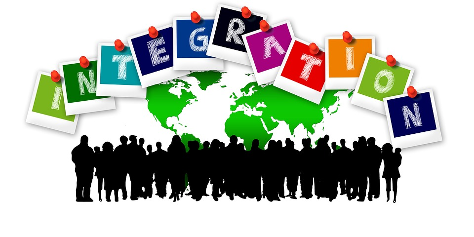
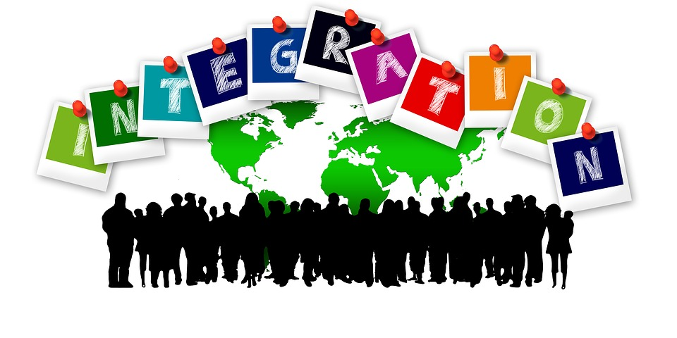

NL-Europa
Naar het Nederland van morgen
sociaal-cultureel


Wij zijn voor meer opvang voor vluchtelingen, door klimaat verandering in Afrika en het midden oosten/ oorlog en natuurrampen trekken/vluchten steeds meer mensen naar Europa toe voor een betere toekomst. Wij vinden dat we als Europa deze mensen moeten opvangen, echter vinden we wel dat Nederland te vol is om meer mensen hier te huisvesten. We zijn het dichtstbevolkte land van Europa en praktisch gezien kunnen we niet iedereen hier in Nederland helpen, daarom vinden we dat we het vluchtelingen vraagstuk naar Europa moet door schuiven en afspraken maken om deze mensen in Europa te huisvesten. Landen in Oost en noord Europa zijn dunbevolkt en deze mensen kunnen daar prima worden gehuisvest. Het vluchtelingenvraagstuk is te groot en te complex om dat op landelijk niveau te regelen, om al deze mensen onderdak en een toekomst te geven moeten we dit Europees zien te regelen met onze buurlanden.
Wij zijn voor een pluriforme samenleving, een pluriforme samenleving verwijst naar een maatschappij waarin verschillende groepen mensen met diverse culturele achtergronden, religies, etniciteiten en levensstijlen naast elkaar bestaan. NL- Europa wil dat alle burgers in Nederland vreedzaam met elkaar kunnen leven, elkaar kunnen accepteren en hun religieus kunnen uiten op hun manier die bij hun persoon past, daarom zijn wij voor een pluriforme samenleving. wij zijn voor integratie, integratie is dat verschillende groepen uit verschillende culturen en achtergronden vreedzaam met elkaar overweg kunnen en hun originele cultuur kunnen behouden en toch mee doen in de samenleving. Iedereen moet elkaars verschillen en ook hun overeenkomsten accepteren, zo leven we in een maatschappij.
 

Momenteel word er in Nederland nog steeds gediscrimineerd, dit gedrag moet stoppen. NL-Europa vind dat mensen discrimineren op basis van geloof, ras of andere overtuigingen niet mag. We zijn allemaal mensen en we moeten leren elkaar te accepteren voor wie we zijn, uit het verleden kan je veel lessen leren en uit het verleden blijkt dat discriminatie op basis van afkomst lijd tot veel verdriet en boosheid bij bepaalde groepen. Een voorbeeld van discriminatie is het toeslagen schandaal van een paar jaar geleden, mensen werden onterecht door de overheid beschuldigd van fraude op basis van hun afkomst en achternaam. Dit gedrag mag absoluut nooit meer gebeuren en NL-Europa staat dan ook voor het uitbannen van discriminatie in Nederland en zeker door overheidsinstanties.
NL-Europa vind het belangrijk dat normen en waarden zoals: gelijkheid, rechtvaardigheid, solidariteit, politieke bekwaamheid, duurzaamheid in de zorg en sociale zekerheid in heel Nederland terug te vinden zijn. Deze normen en waarden zijn belangrijk voor Nederland om onze ideale samenleving te waarborgen, de pluriforme samenleving. de politieke bekwaamheid van onze politici vinden wij ook super belangrijk, er moeten goeie mensen aan het roer staan in Nederland om ons sterk te laten staan voor alle Nederlanders en in Europa. Duurzaamheid in de zorg is super belangrijk om het in de toekomst betaalbaar te maken voor iedereen, dat zorg geen privilege is maar dat iedereen er toegang tot heeft. Sociale zekerheid in Nederland is ook super belangrijk, iedereen heeft recht op bestaanszekerheid zodat iedereen in Nederland mee kan doen in de samenleving.